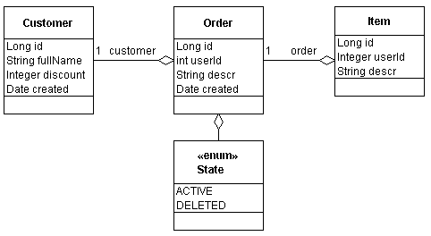
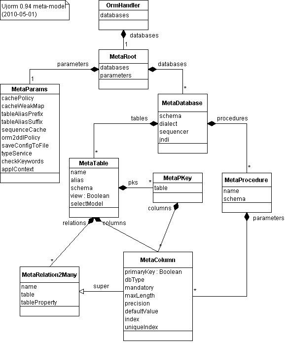

Ujorm - dokumentace frameworku
Licence dokumentu: Creative Commons BY-ND  ,
,
Autor: Pavel Ponec, ponec@ujorm.com
Verze: Ujorm 0.94 (květen, 2010)
Odkaz: tento dokument a homepage Ujorm
Děkuji za Vaše připomínky i náměty.
Poznámka: Pozor, tato česká verze už nebude dále aktualiovaná, použijte anglickou verzi dokumentu pro novější informace!
Obsah:
Quick start:
Ujorm je lightweight ORM framework umožňující efektivní vývoj Java aplikací nad relační databází. Pro rychlé získání základních dovedností doporučuji prostudovat krátký tutorial postavený na komentovaném zdrojovém kódu. V tutoriálu se objevují entity z následujícího class diagramu:

Poznámka: Keys jsou v diagramech popsány formálně pomocí atributů entity.
Při použití Ujorm knihovny (JAR) z Maven repositioy (repo1) doporučuji připojit si ve vašem IDE také JavaDoc, protože knihovna (JAR) je zkompilovaná bez ladicích informací a obsahuje například zkrácené názvy parametrů metod.
Stavy perzistentního objektu
Perzistentní třídu lze získat buď rozšířením abstraktní třídy
OrmTable, nebo implementací interface
OrmUjo. Perzistentní objekt obsahuje kromě vlastních hodnot ještě dvě stavové informace:
-
Session, která je potřebná pro získání DB connection při pozdním volání hodnot (lazy-loading)
-
Key[] - obsahuje seznam keys zapsaných v době přiřazené Sesssion. Tento seznam umožňuje efektivnější aktualizaci databáze příkazem UPDATE, protože příkaz se sestavuje pouze pro modifikované hodnoty Properties. Ostatní hodnoty se při UPDATE ignorují. Pokud objekt nemá přiřazenou Session, tak se zápis nových hodnot neregistruje.
Oba tyto stavy se při Java
serializaci ignorují, to znamená že po obnovení ze serializace jsou logicky prázdné.
Pokud je
atributem perzistentního objektu jiný perzistentní objekt, tak při každém volání se propaguje Session z volajícího objektu na volaný.
OrmUjo objekty neobsahují žádná další (stavová) omezení a proto je možné například:
-
objekt získaný pomocí Update lze použít (po změně ID) pro insert
-
objektu lze přiřadit kdykoli novou Session bez dalších závislostí
-
objektu lze přiřadit Cizí klíč pro vynucení LazyLoading (pomocí metody Ujo.writeValue).
Poslání OrmUjo objektu se tak blíží pouhým "přepravkám dat".
Mapování datových typů:
Mapování datových typů se rozumí přiřazení typu JDBC typu pro perzistentní Ujo property. Podle vlastností Java třídy lze mapování rozdělit na skupiny
Mapování hodnot, kde hodnota je třída neimplementující rozhraní OrmUjo (může být i vlastní třída)
-
defaultní mapování je implementované pro objety: String, Boolean, Byte, Character, Short, Integer, Long, Float, Double, BigDecimal, BigInteger, byte[], java.util.Date, java.sql.Date, java.sql.Time, java.sql.Timestamp, java.sql.Blob, java.sql.Clob, Enum
-
explicitní mapování se uvádí v anotaci @Column, případně pomocí konfiguračního XML souboru
-
pomocí interface: libovolný objekt implementující rozhraní ValueExportable je automaticky mapovaný na VARCHAR. Uvedené rozhraní může implementovat také Enum.
-
specifické požadavky na mapování lze implementovat překrytím třídy TypeService
Mapování relace M:1
-
na primární klíč: pro mapování se používá standardní property, pouze v názvu třídy se objeví třída jiného perzistentního objektu (implementujícího OrmUjo). Jako relační sloupec se použije automaticky primární klíč relační tabulky.
-
explicitní mapování: hodí se v případě, že referencovaný sloupec není primární klíč. V tomto případě lze využít třídu RelationToOne která umožní vložit relační sloupec pomocí druhého parametru podle následujícího vzoru:
ordProperty = RelationToOne.newInstance(Order.class,Order.sid)
Doporučuji referencovaný sloupec označit unikátním indexem pro rychlé hledání i integritu dat, navíc některé databáze index přímo vyžadují.
Mapování relace 1:M
Tento typ mapování nabízí (z pohledu zápisu kódu) snadný přístup k výsledků databázového dotazu. Každé další volání hodnoty generuje znovu databázový dotaz. Nento typ property nemá vliv na databázový model. Ukázka použití:
items = newRelation(Item.class)
Mapování relace 1:1
Ve frameworku je to zvláštní případ relace M:1, kde počet řádů M je možné omezit vhodným unikátním indexem. Alternativním řešením může být použití relační tabulky jako primárního klíče (viz ukázka dále).
Mapování relace M:N
Vazba se realizuje pomocí dvou relací M:1 & 1:N, které se mapují na další (tzv. vazební) tabulku.
Lazy loading:
Pozdní načtení objektů je proces, který umožňuje zpravidla efektivnější přenost dat mezi databází a klientem. Pozdní načtení je implementováno pro každý atribut obsahující další Entitu, která je v databázovém modelu je mapována cizím klíčem.
Při pozdním načtení objektu spouští Ujorm nový databázový dotaz, který využívá databázové spojení uložené v otevřené Session. Protože však entita si uzavřenou session nesmí otevřít sama, tak LazyLoading na uzavřené Session vyhodí run-time výjimku:
new IllegalStateException("The session is closed")
Takové výjimce lze předejít výběrem vhodného řešení:
-
před voláním lazy přiřadit objektu otevřenou session:
OrmUjo.writeSession(session)
-
před voláním lazy aktualizovat atributy objektu podle databáze:
Session.reload(ujo)
-
načíst požadované lazy property hned po získání objektu provoláním metody dle vzoru:
item.getOrder();
-
načíst všechny lazy property do požadované hloubky metodou:
OrmTools.loadLazyValue(OrmUjo, depth)
-
někdy není nutné dotahovat celou entitu, stačí pouze její cizí klíč, pro který není potřeba mít otevřenou Session. Tento klíč lze získat metodou OrmTable.readFK(property) .
Občas je třeba získat lazy atribut(y) jediným SQL dotazem s pomocí JOIN pro vyšší optimalizaci databázového dotazu. Pro tento případ je třeba možné využít:
-
uživatelský dotaz zvaný "Ujorm native query" mapovaný na novou entitu, nebo
-
databázové VIEW - mapované na novou entitu
Session cache:
Ujorm používá cachování objektů v session ve snaze omezit duplicitní databázové dotazy. Pro chování cache platí jednoduchá pravidla:
-
životnost cache má rozsah (scope) databázové transakce. Po provední commit/rollback bude cache uvolněna
-
do cache se dostanou jen objekty cizího klíče při líném čtení (lazy loading), v ostatních případech se objekty čtou vždy z databáze
-
při UPDATE objektu se neprovádí synchronizace cache a tak pro elimilaci případných konflitků lze vyprázdnit cache metodou clearCache()
-
cache má ochranu proti paměťovému přetížení, v praxi to znamená, že garbage collector může část cache kdykoli uvolnit
Z pohledu cache: Ujorm nemusí mít výhradní přístup do databáze, při zápisu bude třeba pouze sjednotit přidělování primárních klíčů. Pomocí parametru
CACHE_POLICY lze pro celý metamodel cache zakázat, alternativně je možné zakázat uvolňování cache pomocí garbage collectoru.
Pro optimalizaci performance je doporučeno udržovat cache logických celků (například článek) na úrovni aplikační logiky.
DDL support:
Ujorm umí upravovat databázové schema pomocí DDL aktualizací podle svého metamodelu. Meta-model obsahuje popis struktury reálné databáze, který se sestavuje z názvů tříd, názvů Keys a jejich anotací a případně podle konfiguračního XML souboru. Po načtení do paměti je metamodel uzamčen tak, že žádné pozdější úpravy nejsou možné. Aktualizace databáze se řídí následujícími pravidly:
-
aktualizace se provádí podle metamodelu ihned po jeho sestavení v objektu OrmHandler
-
aktualizace se provádí pouze pro databázové položky:
-
nové tabulky
-
nové sloupce
-
nové indexy
-
db schema se založí jen při první aktualizaci
-
položku (sloupec, index) jednou vytvořenou v databázi framework dále nemění a tak bude třeba si ve vlastní režii ošetřit migrace například pro:
-
změnu sloupce NULL na NOT-NULL (či zpět)
-
změna indexu UNIQUE na NON-UNIQUE (či zpět)
-
změna primárního klíče tabulky, atd.
-
databázová tabulka musí obsahovat alespoň primární klíč
-
nemapované databázové objekty (tabulky, sloupce, indexy) Ujorm ignoruje
Parametrem
ORM2DLL_POLICY lze chování aktualizace změnit na některý z následujících
přístupů:
-
zákaz aktualizace
-
povolit pouze první sestavení db modelu
-
povolit přírůstkové změny (default)
Obecné použití parametrů Ujorm je popsané v
tutoriálu.
Dědičnost entit
Ujorm nepodporuje dědičnost entit v pojetí JPA a není to ani v plánu. Hlavním důvodem je, že implemetace dědičnosti do stávající architektury Ujorm jednoduše nezapadá.
Snadná dostupost dědičnosti v ORM občas svádí k bezstarostnému používání, které může být vykoupené později výkonnostními problémy na produkčních datech. V případě nutnosti je však možné dědičnost napodobit pomocí návrhového vzoru agregace s využitím rozhraní (Interface).
V návrhu řešení dědičnosti se používají entity:
-
User[id, login, password, name]
-
Customer[user, company, discount]
Navržené řešení je postaveno na rozhraní IUser, které objekty User i Customer implementují. Obě entity User i Customer sdílí stejná ID. Výhody dědičnosti lze začít využívat, protože instanci typu ICustomer můžeme zapsat do datového typu IUser. Popisy setters byly v diagramu pro zjednodušení vynechány.
Všimněte si, že Customer obsahuje primární klíč typu User a tak sdílí stejnou hodnotu ID:
public class Customer extends OrmTable<Employee> implements IUser {
@Column(pk=true, value="id")
public static final Key<Customer, User> user
...
}
Implementace metody Customer.getLogin() může vypadat takto:
@Override
public String getLogin() {
return get(user).getLogin();
}
Při operacích typu INSERT a UPDATE je však třeba se postarat o každou entitu zvlášť. Viz ukázka kódu pro uložení Customer:
Session session = handler.getSession();
session.save(customer.getUser());
session.save(customer);
session.commit();
Ukázka úplné implementace dědičnosti třídy Customer je ke shlédnutí tady a jeho použití je zde.
Primary key auto increment:
Ujorm podporuje automatické generování primárního klíče pomocí třídy UjoSequencer. Řešení bylo ovlivněno především požadavky na vysokou spolehlivost a bezproblémovou přenositelnost implementace mezi databázemi různých poskytovatelů. Přidělování primárních klíčů se řídí následujícími pravidly:
-
primární klíč (PK) bude přiřazen automaticky pouze v případě, že hodnota Key je NULL. Je tedy možné přiřazovat operativně vlastní hodnoty PK bez nutnosti změny nějaké konfigurace
-
každá tabulka má svoji vlastní řadu primárních klíčů o kterou se stará její vlastní instance třídy UjoSequencer. Třída UjoSequencer si udržuje hodnoty primárního klíče v pomocné databázové tabulce ujorm_pk_support, tady je popis sloupců:
-
id (VARCHAR) - název tabulky včetně schematu ve formátu
-
seq - hodnota poslední přiřazené sequence
-
cache - UjoSequencer si umí alokovat řadu po sobě jdoucích čísel, která pak přiděluje z paměti pro zvýšení performance. Zapnutá cache však může způsobit:
-
nespojitou řadu klíčů v případě restartu Ujorm a také
-
porušení časové vzestupnosti v případě použití více Ujorm klientů
Uvedené chování lze eliminovat vypnutím cache pomocí hodnoty 1. Hodnotu cache lze měnit korektně i za běhu aplikace (SQL příkazem).
-
maxvalue - pokud sloupec seq překročí maximální hodnotu, Ujorm vyhodí výjimku
-
pro alokaci primárního klíče Ujorm používá nezávislou DB connection tak, aby případný rollback transakce nezpůsobil návrat již přiřazených primárních klíčů
Častá otázka zní, jak využít nativní podporu databázové sequence? Řešení spočívá ve vytvoření vlastní implementace (potomka) třídy UjoSequencer. Třídu tohoto potomka je třeba zaregistrovat v parametrech Ujorm před sestavením metamodelu. Jediná podmínka řešení je, že získání nového primárního klíče (například pomocí JDBC) musí proběhnout ještě před zavoláním příkazu INSERT. Odstranění této podmínky je v plánu rozvoje Ujorm.
Databázové procedury:
Ujorm podporuje od verze 0.94 volání databázových uložených procedur a funkcí (dále jen procedura). Každá procedura je popsána třídou rozšiřující abstraktní třídu DbProcedure, která implementuje Ujo. Významné je pořadí Keys ve třídě, které musí odpovídat pořadí parametrů v proceduře. Pokud procedura nemá návratový typ, tak první konstanta Key v pořadí bude typu Void.class. První Key je typu OUTPUT, ostatní jsou defaultně typu INPUT. Defaultní typy keys je možné překrýt anotací @Parameter(input=true, output=true). Databázové procedury je nutné registrovat ve třídě databases podobně jako databázové tabulky:
public static final Property<Database,MyProcedure> procedure
= newInstance(MyProcedure.class);
Při použití vytvoříme instanci procedury, naplníme její parametry typu INPUT a zavoláme metodu call s parametrem otevřené session:
MyProcedure procedure = new MyProcedure().
procedure.set(MyProcedure.DATE, new Date());
String result = procedure.call(session);
Úplnou ukázku najdete na odkazu tutorial. Instance procedury není spojena s konkrétní session a tak lze takovou instanci použít opakovaně s různými parametry (pouze jedno-vláknový přístup). Ujorm v současné verzi nepodporuje návratový typ parametru ResultSet.
Proč názvy Property mají malá písmena?
V ukázkách uvedených v této dokumentaci jsou názvy statických fieldů Keys uváděné často malými písmeny - v rozporu se standardem. Důvodem je jednak snaha o zkrácení kódu při tvorbě Key ale zdá se být také užitečné, že malá písmena korespondují s instančními proměnnými (fields). Malá písmena se osvědčila lépe, nicméně použití velkých písmen ve vašem projektu nepředstavuje technický problém.
Úplnou specifikaci Key lze sestavit explicitně včetně názvu dle následujícího vzoru:
public static final Property<BO, Long> id = newKey("id", Long.class);
Při zkráceném zápisu se název Property přebírá z názvu fieldu, ukázka použití je tady:
public static final Property<BO, Long> id = newKey(Long, class);
Krátké připomenutí pojmů Ujormu:
-
field Key - je název statické konstanty Key v implementaci Ujo
-
jméno Key - je logické označení, které vrací metoda Key.getName() jako String
Vlastnosti Ujo objektů:
Doporučuji mít na paměti následujcí vlastnosti UJO, které mají vliv na jeho správné chování:
-
každý atribut entity má svoji unikátní instanci Key
-
pro čtení a zápis hodnot se používají metody:
-
Key.getValue(..)
-
Key.setValue(..)
a nebo jiné metody, které je interně volají, například:
-
UjoMiddle.get(..)
-
UjoMiddle.set(..)
případně komfortní setters a getters, které volají (interně) některou z metodu výše uvedených
-
metoda Key.getValue() zaměňuje hodnoty NULL za defaultní hodnotu Key (která je NULL pokud ji nenastavíte jinak). Pozor, metoda Ujo.readValue() žádnou záměnu defaultních hodnot neprovádí.
-
pro zápis a čtení hodnoty není doporučeno volat netypové metody
-
Ujo.readValue()
-
Ujo.writeValue() ,
nicméně tyto dvě metody jsou vhodné pro překrývání za účelem implementace různých konverzí, validací a jiných požadavků.
-
pro defaultní hodonotu Key je vhodný pouze neměnný objekt (immutable object)
-
Ujo objekty lze obecně dědit, nicméně dědičnost objektů OrmUjo podporovaná není.
-
více informací k Ujo Core lze najít zde.
Best practices:
-
společný předek vašich doménových objektů může usnadnit změnu chování všech potomků. Příkladem může být generická implementace metod toString() , nebo implementace metod equals(..), hashCode() a podobně
-
služba pro zpracování dat z DB do Query může snadno doplňovat další Criterion. Příkladem využití může být implementace omezeného přístupu k datům podle kontextu (role) přihlášeného uživatele
-
pro přístup k hodnotám Ujo objektu se nejvíce osvědčilo použití metod:
-
UjoMiddle.get(property)
-
UjoMiddle.set(property, value)
Meta-model:
Meta-model se sestavuje podle obsahu Ujo keys třídy Database a jejích tabulek. Názvy tabulek, view, procedur se odvozují z názvů Ujo property. Většinu vlastností modelu lze překrývat anotacemi umístěnými přímo u property a nebo u názvu třídy. Vlastnosti nastavené anotacemi lze dále překrývat konfiguračním XML souborem, který může modifikovat volitelně jen vybrané části metamodelu.
Po sestavení metamodelu v paměti se model uzamkne a není možné do něj dále zapisovat, za běhu programu však lze získávat z něj užitečné informace. Mírně zjednodušený class diagram meta je na následujícím obrázku:

Popis entit:
-
OrmHandler je třída poskytující metamodel, v rámci aplikace je doporučeno držet pouze jednu instanci této třídy. Třída nabízí několik metod zpřístupňujících efektivně vybrané části metamodelu. OrmHandler je jediná entita v diagramu, která není potomkem abstraktní třídy AbstractMetaModel (implementující rozhraní Ujo).
-
MetaRoot tvoří kořen metamodelu a umožňuje tak čtení nebo tisk konfiguračního XML souboru
-
MetaParams obsahuje obecné parametry Ujorm, které se dají také modifikovat konfiguračním XML souborem
-
MetaDatabase obsahuje databázová připojení, seznam tabulek (případně views) a seznam databázových procedur. Obsahuje také defaultní schema.
-
MetaTable zastupuje databázovou tabulku, která přebírá schema z MetaDatabase, nicméně lze nastavit (anotacemi) i schema odlišné. Logický přízak 'view' odlišuje view od tabulek (do view nelze například zapisovat a také nemají vliv na aktualizaci DB).
-
MetaPKey - taždá tabulka obsahuje jeden primární klíč
-
MetaRelation2Many - zastupuje relaci typu 1:M
-
MetaColumn - třída reprezentuje databázové sloupce, případně parametry uložené procedury.
Poděkování
Děkuji vývojovému týmu firmy Effectiva Solutions za cenné odborné připomínky k obsahu tohoto dokumentu.